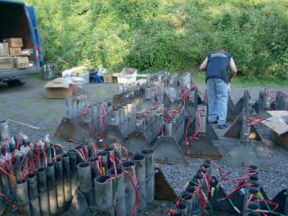
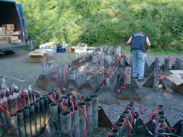

Böllerverbot
Dieser Beitrag erschien ursprünglich im Spickzettel/März 2023. Zur Originalausgabe
Die Tradition, das neue Jahr willkommen zu heißen, gibt es wahrscheinlich schon, seit es Kalender überhaupt gibt. Die Benennung als „Silvester“ stammt aus dem liturgischen Kalender durch den Namenstag des am 31. Dezember 335 verstorbenen Papstes Silvester. Im Gegensatz zu den Vermutungen der meisten ist das Feuerwerk schon im 13. Jahrhundert entstanden. Natürlich konnte sich das damals nur der Adel leisten – ganz im Gegensatz zu heute, wo man sich schon für zwei bis drei Euro allen möglichen Unfug besorgen kann.
Zunächst kamen die Idee des Böllers aus China, mit dem „Bahzou“, einem explodierenden Bambusrohr, wollten die Menschen böse Geister vertreiben. In Italien entwickelte sich dann im 14. Jahrhundert eine eigene Feuerwerkskunst, die vor allem im Barock zur Ausgestaltung prächtiger Feste diente. Aber die mit dem Tod Papst Silvesters verbundenen Emotionen, Werte und Traditionen sind heute leider zu großem Teil zerflossen. Heutzutage ist die die Silvesternacht für einige ein Wettstreit um den lautesten Böller und die teuersten Raketen, aber vor allem für den größten Teil eine Nacht voller magischer Momente in Form von Wunderkerzen, Möglichkeit das neue Jahr zu begrüßen, mit Freunden, Bekannten, Bekannten von Freunden, Freunden Bekannter der Cousine fünfzehnten Grades und teils wildfremden Leuten: Es geht darum, die letzte Nacht des Jahres mit seinen Liebsten zu verbringen, nochmal auf all die tollen, beziehungsweise tollpatschigsten Momente zurückzuschauen, sich vorzunehmen mehr Sport zu machen und zu lernen, wie man Spannbettlaken zusammenlegt. Feuerwerk wie wir es kennen wird übrigens immer noch zum größten Teil in China hergestellt, was selbstverständlich seinen Grund im Profit findet. Dazu wird, vereinfacht gesagt, mit Oxidationsmitteln und Brennstoffen Energie erzeugt. Mit verschiedenen Salzen werden dann die Farben erzeugt, z.B. mit Calcium Rot, mit Kupfer Blau und mit Natrium Gelb.
Nun ist es eventuell, möglicherweise, unter Umständen, vielleicht ein klein wenig riskant mit Schwarzpulver aus den klassischen Western-Revolvern randvoll betrunken und ohne jegliche Kontrolle zu spielen? Na ja. An sich ja, aber dafür haben wir ja die BAM (Bundesanstalt für Materialforschung und -prüfung). Sie kontrolliert für uns alle angemeldeten Knallkörper die nach bzw. aus Deutschland kommen, setzt ihren Stempel drauf und garantiert uns somit einen sicheren Gebrauch. Tja, klingt doch alles super, was gibt's da zu bemängeln? Ganz einfach: Der Mensch ist natürlich mal wieder auf die grandiose Idee gekommen, die sichere, verifizierte, mehrfach überprüfte und kontrollierte Ware aus Deutschland gegen Objekte zu tauschen, an denen mehr Menschen ihre Hand verloren haben, als jedes Jahr Schlager vorm Brandenburger Tor in Berlin gespielt werden. Tatsächlich erleiden jährlich etwa 50 bis 70 Menschen in Deutschland schwere Verletzungen durch Pyrotechnik (ohne Unangemeldete und Todesfälle).
Insbesondere durch ausländische Böller. „Denn im Gegensatz zu den in Deutschland zugelassenen Feuerwerkskörpern enthalten die Billigböller, die überall in Polen zu bekommen sind, in der Regel Ammoniumnitrat mit einer 40-prozentigen Sprengkraft von TNT“ [Q.1]. Von den Verzögerungszeiten ganz zu schweigen. Zündet man einen deutschen. Böller und explodiert dieser (im seltensten Fall) noch in der Hand, braucht man im schlimmsten Fall ein paar Spa- und Yogastunden für seinen Finger. Bei einem Polenböller kannst du dir diese Kosten sparen. (:
Wir haben also geklärt, dass es richtige Genius-Menschen gibt, die ihren teils lebensgefährlichen Spaß aus dem Ausland besorgen; dass es genug Deutsche gibt, die sich nicht allzu gut mit der Polizei verstehen, versteht sich von selbst. Die perfekte Mischung, was? Langer Text, kurzer Sinn, worauf ich hinaus möchte ist, dass es offene Angriffe auf Rettungskräfte gab. Die Menschen zu beschießen, die tagtäglich ihr Bestes geben, die immer für uns da sind, wenn's brenzlig wird, die teils zu Zeiten arbeiten, in denen wir längst in die Tiefschlafphase gelangt sind, und die trotzdem noch konzentriert und mit voller Aufmerksamkeit arbeiten müssen, ist in jeglicher Hinsicht unverantwortbar – das kann man nicht einfach damit begründen, dass jeder mal „seine Phase“ hat und „man ja mal ein Mal im Jahr ‘n bisschen was rauslassen müsse“! Es ist in keiner Weise verantwortlich, Menschen mit Böllern und Raketen zu bewerfen, die selbst an Weihnachten und Silvester für die Sicherheit und Gesundheit ihrer Mitmenschen arbeiten und sich trotz genau dieser Angriffe auf die Straßen trauen.
Auf einem Video (YouTube) kann man sehen, wie Polizeikräfte mit Böllern, Raketen und andersartiger Pyrotechnik beschossen wurden. Immer wieder riefen sie laut, dass die Angreifer sofort stoppen sollten, doch diese haben nicht aufgehört. Zwischendurch sieht man, wie z.B. Raketen knapp die Polizisten verfehlt haben. Stellt euch vor, ihr opfert freiwillig den Abend, wo der Rest der Welt frei hat, um das Wohl aller zu sichern, kurz darauf seht ihr einen Flugkörper zwei Zentimeter von eurem Kopf mit rund 60 Stundenkilometern in Richtung eurer Kollegen zischen. Die Einsatzkräfte riefen Verstärkung, doch mussten sich letztendlich zurückziehen.
Diese offenen Handlungen mit Pyrotechnik gegen Einsatzkräfte wie Polizei und Krankenwagen gab es in ganz Deutschland. Infolgedessen steht auch der berechtigte Vorschlag eines Verbots von Pyrotechnik im Raum. Teilweise wird die Möglichkeit eines nur einschränkenden Verbotes in Betracht gezogen, bei dem nur Knallkörper (also alles, was keinen visuellen Effekt hat, sondern nur laut „Bumm“ macht) untersagt werden.
Neben den Angriffen auf Rettungskräfte, den generellen Unfällen und den somit überlasteten Kapazitäten der Krankenhäuser würde diese Einschränkung auch ein großes Plus für unsere Umwelt bedeuten. Raketen fliegen nicht nur ganz weit weg von uns in den Himmel, sie kommen auch wieder zu uns nach unten. Tiere haben im Vergleich zum Menschen ein derart feines Gehör, dass sie zum Teil Ultraschall wahrnehmen können. Es gibt genug Zeitgenossen, die sich jedes Jahr über den Grad der Lautstärke beschweren. Was würden also Hund, Katz und Fledermaus dazu sagen? Bei einer Klage beim Ordnungsamt würden sie es jedenfalls nicht belassen. Nein, es gibt weitaus schlimmere Folgen als nur das: Vögel steigen bis auf 1.000 Meter auf, das sind rund 900 Meter mehr als sonst. Auch erleiden sie Anflug- und Knalltraumata, im schlimmsten Fall werden sie flugunfähig. Der Schall der Knallkörper reicht häufig auch bis tief in die Wälder, was Füchse erschrecken und auf die Straße laufen lässt, wo sie dann einen kurzen Tod erleiden. Inzwischen haben wir Ende März und offengesagt steht das Thema eines Verbots nicht mehr wirklich auf der Tagesordnung.
Auch ich habe letztes Silvester ein bisschen was in die Luft gejagt, aber wenn wir weiterhin beide Augen zudrücken und wenn überhaupt erst wieder im Dezember über dieses und weitere Probleme geredet wird, werden wir nie zu einer gerechten Lösung kommen. Also denkt beim nächsten Mal, wenn ihr am 31.12. ein Feuerzeug in der Hand habt, über das, was nach dem ‚Ka-Bumm‘ passiert, nach, und ob es euch das wirklich wert ist.
Jeremias Ruff, in: Spickzettel
2023/03
 
